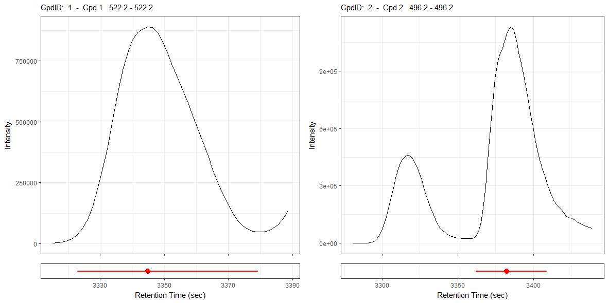

Package: peakPantheR
Authors: Arnaud Wolfer
The peakPantheR package is designed for the detection, integration and reporting of pre-defined features in MS files (e.g. compounds, fragments, adducts, …).
The Real Time Annotation is set to detect and integrate multiple compounds in one file at a time. It therefore can be deployed on a LC-MS instrument to integrate a set of pre-defined features (e.g. spiked standards) as soon as the acquisition of a sample is completed.
Using the faahKO raw MS dataset as an example, this vignette will:
Real time compound integration is set to process multiple compounds in one file at a time.
To achieve this, peakPantheR will:
In the following example we will target two pre-defined features in a single raw MS spectra file from the faahKO package. For more details on the installation and input data employed, please consult the Getting Started with peakPantheR vignette.
The path to a MS file from the faahKO is located and used as input spectra:
library(faahKO)
## file paths
input_spectraPath <- c(system.file('cdf/KO/ko15.CDF', package = "faahKO"))
input_spectraPath
#> [1] "C:/R/R-4.2.0/library/faahKO/cdf/KO/ko15.CDF"Two targeted features (e.g. compounds, fragments, adducts, …) are defined and stored in a table with as columns:
cpdID (numeric)cpdName (character)rtMin (sec)rtMax (sec)rt (sec, optional / NA)mzMin (m/z)mzMax (m/z)mz (m/z, optional / NA)
# targetFeatTable
input_targetFeatTable <- data.frame(matrix(vector(), 2, 8, dimnames=list(c(),
c("cpdID", "cpdName", "rtMin", "rt", "rtMax", "mzMin",
"mz", "mzMax"))), stringsAsFactors=FALSE)
input_targetFeatTable[1,] <- c("ID-1", "Cpd 1", 3310., 3344.888, 3390.,
522.194778, 522.2, 522.205222)
input_targetFeatTable[2,] <- c("ID-2", "Cpd 2", 3280., 3385.577, 3440.,
496.195038, 496.2, 496.204962)
input_targetFeatTable[,c(3:8)] <- sapply(input_targetFeatTable[,c(3:8)],
as.numeric)| cpdID | cpdName | rtMin | rt | rtMax | mzMin | mz | mzMax |
|---|---|---|---|---|---|---|---|
| ID-1 | Cpd 1 | 3310 | 3344.888 | 3390 | 522.194778 | 522.2 | 522.205222 |
| ID-2 | Cpd 2 | 3280 | 3385.577 | 3440 | 496.195038 | 496.2 | 496.204962 |
peakPantheR_singleFileSearch() takes as input a singleSpectraDataPath pointing to the file to process and targetFeatTable defining the features to integrate. The resulting annotation contains all the fitting and integration properties:
library(peakPantheR)
annotation <- peakPantheR_singleFileSearch(
singleSpectraDataPath = input_spectraPath,
targetFeatTable = input_targetFeatTable,
peakStatistic = TRUE,
curveModel = 'skewedGaussian',
verbose = TRUE)
#> Polarity can not be extracted from netCDF files, please set manually the polarity with the 'polarity' method.
#> Reading data from 2 windows
#> Data read in: 1.57 secs
#> Warning: rtMin/rtMax outside of ROI; datapoints cannot be used for mzMin/mzMax calculation, approximate mz and returning ROI$mzMin and ROI$mzMax for ROI #1
#> Found 2/2 features in 0.04 secs
#> Peak statistics done in: 0 secs
#> Feature search done in: 2.66 secs
annotation$TIC
#> [1] 2410533091
## acquisition time cannot be extracted from NetCDF files
annotation$acquTime
#> [1] NA
annotation$peakTable| found | rtMin | rt | rtMax | mzMin | mz | mzMax |
|---|---|---|---|---|---|---|
| TRUE | 3309.759 | 3346.828 | 3385.41 | 522.1948 | 522.2 | 522.2052 |
| TRUE | 3345.377 | 3386.529 | 3428.279 | 496.2 | 496.2 | 496.2 |
| peakArea | peakAreaRaw | maxIntMeasured | maxIntPredicted | cpdID | cpdName |
|---|---|---|---|---|---|
| 26133727 | 26071378 | 889280 | 901015.8 | ID-1 | Cpd 1 |
| 35472141 | 36498367 | 1128960 | 1113577 | ID-2 | Cpd 2 |
| is_filled | ppm_error | rt_dev_sec | tailingFactor | asymmetryFactor |
|---|---|---|---|---|
| FALSE | 0.02337616 | 1.939759 | 1.015357 | 1.026824 |
| FALSE | 0.02460103 | 0.9518072 | 1.005378 | 1.009318 |
annotation$curveFit
#> [[1]]
#> $amplitude
#> [1] 162404.8
#>
#> $center
#> [1] 3341.888
#>
#> $sigma
#> [1] 0.07878613
#>
#> $gamma
#> [1] 0.00183361
#>
#> $fitStatus
#> [1] 2
#>
#> $curveModel
#> [1] "skewedGaussian"
#>
#> attr(,"class")
#> [1] "peakPantheR_curveFit"
#>
#> [[2]]
#> $amplitude
#> [1] 199249.1
#>
#> $center
#> [1] 3382.577
#>
#> $sigma
#> [1] 0.07490442
#>
#> $gamma
#> [1] 0.00114719
#>
#> $fitStatus
#> [1] 2
#>
#> $curveModel
#> [1] "skewedGaussian"
#>
#> attr(,"class")
#> [1] "peakPantheR_curveFit"
annotation$ROIsDataPoint
#> [[1]]
#> rt mz int
#> 1 3315.154 522.2 2187
#> 2 3316.719 522.2 3534
#> 3 3318.284 522.2 6338
#> 4 3319.849 522.2 11718
#> 5 3321.414 522.2 21744
#> 6 3322.979 522.2 37872
#> 7 3324.544 522.2 62424
#> 8 3326.109 522.2 98408
#> 9 3327.673 522.2 152896
#> 10 3329.238 522.2 225984
#> 11 3330.803 522.2 308672
#> 12 3332.368 522.2 399360
#> 13 3333.933 522.2 504000
#> 14 3335.498 522.2 614656
#> 15 3337.063 522.2 711872
#> 16 3338.628 522.2 784704
#> 17 3340.193 522.2 836608
#> 18 3341.758 522.2 866304
#> 19 3343.323 522.2 882304
#> 20 3344.888 522.2 889280
#> 21 3346.453 522.2 888256
#> 22 3348.018 522.2 866816
#> 23 3349.583 522.2 827392
#> 24 3351.148 522.2 777728
#> 25 3352.713 522.2 727040
#> 26 3354.278 522.2 678464
#> 27 3355.843 522.2 629120
#> 28 3357.408 522.2 578048
#> 29 3358.973 522.2 524288
#> 30 3360.538 522.2 471040
#> 31 3362.102 522.2 416320
#> 32 3363.667 522.2 360064
#> 33 3365.232 522.2 302400
#> 34 3366.797 522.2 249152
#> 35 3368.362 522.2 202560
#> 36 3369.927 522.2 161024
#> 37 3371.492 522.2 123520
#> 38 3373.057 522.2 93160
#> 39 3374.622 522.2 71856
#> 40 3376.187 522.2 58392
#> 41 3377.752 522.2 51072
#> 42 3379.317 522.2 48376
#> 43 3380.882 522.2 49168
#> 44 3382.447 522.2 53120
#> 45 3384.012 522.2 62488
#> 46 3385.577 522.2 78680
#> 47 3387.142 522.2 102840
#> 48 3388.707 522.2 134656
#>
#> [[2]]
#> rt mz int
#> 1 3280.725 496.2 1349
#> 2 3290.115 496.2 2069
#> 3 3291.680 496.2 3103
#> 4 3293.245 496.2 5570
#> 5 3294.809 496.2 10730
#> 6 3296.374 496.2 20904
#> 7 3297.939 496.2 38712
#> 8 3299.504 496.2 64368
#> 9 3301.069 496.2 97096
#> 10 3302.634 496.2 136320
#> 11 3304.199 496.2 182080
#> 12 3305.764 496.2 233472
#> 13 3307.329 496.2 288064
#> 14 3308.894 496.2 341248
#> 15 3310.459 496.2 386560
#> 16 3312.024 496.2 419648
#> 17 3313.589 496.2 441344
#> 18 3315.154 496.2 454592
#> 19 3316.719 496.2 459776
#> 20 3318.284 496.2 456320
#> 21 3319.849 496.2 444736
#> 22 3321.414 496.2 425408
#> 23 3322.979 496.2 397888
#> 24 3324.544 496.2 365952
#> 25 3326.109 496.2 329856
#> 26 3327.673 496.2 288832
#> 27 3329.238 496.2 244864
#> 28 3330.803 496.2 207616
#> 29 3332.368 496.2 177216
#> 30 3333.933 496.2 148544
#> 31 3335.498 496.2 119240
#> 32 3337.063 496.2 94736
#> 33 3338.628 496.2 76832
#> 34 3340.193 496.2 64048
#> 35 3341.758 496.2 53744
#> 36 3343.323 496.2 45704
#> 37 3344.888 496.2 39576
#> 38 3346.453 496.2 35080
#> 39 3348.018 496.2 31432
#> 40 3349.583 496.2 28904
#> 41 3351.148 496.2 27064
#> 42 3352.713 496.2 25632
#> 43 3354.278 496.2 24480
#> 44 3355.843 496.2 23840
#> 45 3357.408 496.2 23688
#> 46 3358.973 496.2 24680
#> 47 3360.538 496.2 28608
#> 48 3362.102 496.2 39616
#> 49 3363.667 496.2 63344
#> 50 3365.232 496.2 107352
#> 51 3366.797 496.2 182144
#> 52 3368.362 496.2 295232
#> 53 3369.927 496.2 438016
#> 54 3371.492 496.2 592256
#> 55 3373.057 496.2 737408
#> 56 3374.622 496.2 858624
#> 57 3376.187 496.2 938368
#> 58 3377.752 496.2 982976
#> 59 3379.317 496.2 1015232
#> 60 3380.882 496.2 1057280
#> 61 3382.447 496.2 1095680
#> 62 3384.012 496.2 1122304
#> 63 3385.577 496.2 1128960
#> 64 3387.142 496.2 1111040
#> 65 3388.707 496.2 1058816
#> 66 3390.272 496.2 996608
#> 67 3391.837 496.2 942272
#> 68 3393.402 496.2 888640
#> 69 3394.966 496.2 820160
#> 70 3396.531 496.2 744448
#> 71 3398.096 496.2 674688
#> 72 3399.661 496.2 609600
#> 73 3401.226 496.2 543552
#> 74 3402.791 496.2 480896
#> 75 3404.356 496.2 428032
#> 76 3405.921 496.2 387520
#> 77 3407.486 496.2 350976
#> 78 3409.051 496.2 313984
#> 79 3410.616 496.2 276224
#> 80 3412.181 496.2 243776
#> 81 3413.746 496.2 219264
#> 82 3415.311 496.2 202368
#> 83 3416.876 496.2 189184
#> 84 3418.441 496.2 174272
#> 85 3420.006 496.2 158080
#> 86 3421.571 496.2 143744
#> 87 3423.136 496.2 135808
#> 88 3424.701 496.2 131648
#> 89 3426.266 496.2 126784
#> 90 3427.831 496.2 118328
#> 91 3429.395 496.2 109144
#> 92 3430.960 496.2 101944
#> 93 3432.525 496.2 96896
#> 94 3434.090 496.2 92048
#> 95 3435.655 496.2 86408
#> 96 3437.220 496.2 81288
#> 97 3438.785 496.2 78144peakPantheR_singleFileSearch() takes multiple parameters that can alter the file annotation:
peakStatistic if TRUE calculates additional peak statistics: ‘ppm_error’, ‘rt_dev_sec’, ‘tailing factor’ and ‘asymmetry factor’
plotEICsPath if not NA will save a .png of all ROI EICs at the path provided (expects 'filepath/filename.png' for example). If NA no plot is savedgetAcquTime if TRUE the sample acquisition date-time is extracted from the mzML metadata. Acquisition time cannot be extracted from other file formats. The additional file access will impact run timeFIR if not NULL, defines the Fallback Integration Regions (FIR) to integrate when a feature is not found.curveModel, defines the peak-shape model to fit to each EIC. By default, a ‘skewedGaussian’ model is used. The other alternative is the exponentially modified gaussian ‘emgGaussian’ model.verbose if TRUE messages calculation progress, time taken and number of features found (total and matched to targets)... passes arguments to findTargetFeatures to alter peak-picking parameters (e.g. the curveModel, the sampling or fitting parameters)The summary plot generated by plotEICsPath, corresponding to the EICs of each integrated regions of interest is as follow: 
EICs plot: Each panel correspond to a targeted feature, with the EIC extracted on the
mzMin,mzMaxrange found. The red dot marks the RT peak apex, and the red line highlights the RT peakwidth range found (rtMin,rtMax)
#> ─ Session info ───────────────────────────────────────────────────────────────
#> setting value
#> version R version 4.2.0 (2022-04-22 ucrt)
#> os Windows 10 x64 (build 19043)
#> system x86_64, mingw32
#> ui RTerm
#> language en
#> collate English_United Kingdom.utf8
#> ctype English_United Kingdom.utf8
#> tz Europe/Paris
#> date 2022-05-01
#> pandoc 2.7.1 @ D:/Documents/rstudio-pandoc/ (via rmarkdown)
#>
#> ─ Packages ───────────────────────────────────────────────────────────────────
#> package * version date (UTC) lib source
#> affy 1.74.0 2022-04-26 [2] Bioconductor
#> affyio 1.66.0 2022-04-26 [2] Bioconductor
#> Biobase * 2.56.0 2022-04-26 [2] Bioconductor
#> BiocGenerics * 0.42.0 2022-04-26 [2] Bioconductor
#> BiocManager 1.30.17 2022-04-22 [2] CRAN (R 4.2.0)
#> BiocParallel * 1.30.0 2022-04-27 [2] Bioconductor
#> BiocStyle * 2.24.0 2022-04-26 [2] Bioconductor
#> bitops 1.0-7 2021-04-24 [2] CRAN (R 4.2.0)
#> bookdown 0.26 2022-04-15 [2] CRAN (R 4.2.0)
#> brio 1.1.3 2021-11-30 [2] CRAN (R 4.2.0)
#> bslib 0.3.1 2021-10-06 [2] CRAN (R 4.2.0)
#> cachem 1.0.6 2021-08-19 [2] CRAN (R 4.2.0)
#> callr 3.7.0 2021-04-20 [2] CRAN (R 4.2.0)
#> cli 3.3.0 2022-04-25 [2] CRAN (R 4.2.0)
#> clue 0.3-60 2021-10-11 [2] CRAN (R 4.2.0)
#> cluster 2.1.3 2022-03-28 [2] CRAN (R 4.2.0)
#> codetools 0.2-18 2020-11-04 [2] CRAN (R 4.2.0)
#> colorspace 2.0-3 2022-02-21 [2] CRAN (R 4.2.0)
#> crayon 1.5.1 2022-03-26 [2] CRAN (R 4.2.0)
#> DelayedArray 0.22.0 2022-04-26 [2] Bioconductor
#> DEoptimR 1.0-11 2022-04-03 [2] CRAN (R 4.2.0)
#> desc 1.4.1 2022-03-06 [2] CRAN (R 4.2.0)
#> devtools 2.4.3 2021-11-30 [2] CRAN (R 4.2.0)
#> digest 0.6.29 2021-12-01 [2] CRAN (R 4.2.0)
#> doParallel 1.0.17 2022-02-07 [2] CRAN (R 4.2.0)
#> DT 0.22 2022-03-28 [2] CRAN (R 4.2.0)
#> ellipsis 0.3.2 2021-04-29 [2] CRAN (R 4.2.0)
#> evaluate 0.15 2022-02-18 [2] CRAN (R 4.2.0)
#> faahKO * 1.36.0 2022-04-28 [2] Bioconductor
#> fansi 1.0.3 2022-03-24 [2] CRAN (R 4.2.0)
#> fastmap 1.1.0 2021-01-25 [2] CRAN (R 4.2.0)
#> foreach 1.5.2 2022-02-02 [2] CRAN (R 4.2.0)
#> fs 1.5.2 2021-12-08 [2] CRAN (R 4.2.0)
#> GenomeInfoDb 1.32.1 2022-04-28 [2] Bioconductor
#> GenomeInfoDbData 1.2.8 2022-05-01 [2] Bioconductor
#> GenomicRanges 1.48.0 2022-04-26 [2] Bioconductor
#> ggplot2 3.3.5 2021-06-25 [2] CRAN (R 4.2.0)
#> glue 1.6.2 2022-02-24 [2] CRAN (R 4.2.0)
#> gtable 0.3.0 2019-03-25 [2] CRAN (R 4.2.0)
#> highr 0.9 2021-04-16 [2] CRAN (R 4.2.0)
#> htmltools 0.5.2 2021-08-25 [2] CRAN (R 4.2.0)
#> htmlwidgets 1.5.4 2021-09-08 [2] CRAN (R 4.2.0)
#> httpuv 1.6.5 2022-01-05 [2] CRAN (R 4.2.0)
#> impute 1.70.0 2022-04-26 [2] Bioconductor
#> IRanges 2.30.0 2022-04-26 [2] Bioconductor
#> iterators 1.0.14 2022-02-05 [2] CRAN (R 4.2.0)
#> jquerylib 0.1.4 2021-04-26 [2] CRAN (R 4.2.0)
#> jsonlite 1.8.0 2022-02-22 [2] CRAN (R 4.2.0)
#> knitr 1.39 2022-04-26 [2] CRAN (R 4.2.0)
#> later 1.3.0 2021-08-18 [2] CRAN (R 4.2.0)
#> lattice 0.20-45 2021-09-22 [2] CRAN (R 4.2.0)
#> lifecycle 1.0.1 2021-09-24 [2] CRAN (R 4.2.0)
#> limma 3.52.0 2022-04-26 [2] Bioconductor
#> magrittr 2.0.3 2022-03-30 [2] CRAN (R 4.2.0)
#> MALDIquant 1.21 2021-12-23 [2] CRAN (R 4.2.0)
#> MASS 7.3-56 2022-03-23 [2] CRAN (R 4.2.0)
#> MassSpecWavelet 1.62.0 2022-04-26 [2] Bioconductor
#> Matrix 1.4-1 2022-03-23 [2] CRAN (R 4.2.0)
#> MatrixGenerics 1.8.0 2022-04-26 [2] Bioconductor
#> matrixStats 0.62.0 2022-04-19 [2] CRAN (R 4.2.0)
#> memoise 2.0.1 2021-11-26 [2] CRAN (R 4.2.0)
#> mime 0.12 2021-09-28 [2] CRAN (R 4.2.0)
#> minpack.lm 1.2-2 2022-04-13 [2] CRAN (R 4.2.0)
#> MsCoreUtils 1.8.0 2022-04-26 [2] Bioconductor
#> MsFeatures 1.4.0 2022-04-26 [2] Bioconductor
#> MSnbase * 2.22.0 2022-04-26 [2] Bioconductor
#> munsell 0.5.0 2018-06-12 [2] CRAN (R 4.2.0)
#> mzID 1.34.0 2022-04-26 [2] Bioconductor
#> mzR * 2.30.0 2022-04-26 [2] Bioconductor
#> ncdf4 1.19 2021-12-15 [2] CRAN (R 4.2.0)
#> pander * 0.6.5 2022-03-18 [2] CRAN (R 4.2.0)
#> pcaMethods 1.88.0 2022-04-26 [2] Bioconductor
#> peakPantheR * 1.10.0 2022-05-01 [1] Bioconductor
#> pillar 1.7.0 2022-02-01 [2] CRAN (R 4.2.0)
#> pkgbuild 1.3.1 2021-12-20 [2] CRAN (R 4.2.0)
#> pkgconfig 2.0.3 2019-09-22 [2] CRAN (R 4.2.0)
#> pkgdown 2.0.3 2022-04-24 [2] CRAN (R 4.2.0)
#> pkgload 1.2.4 2021-11-30 [2] CRAN (R 4.2.0)
#> plyr 1.8.7 2022-03-24 [2] CRAN (R 4.2.0)
#> pracma 2.3.8 2022-03-04 [2] CRAN (R 4.2.0)
#> preprocessCore 1.58.0 2022-04-26 [2] Bioconductor
#> prettyunits 1.1.1 2020-01-24 [2] CRAN (R 4.2.0)
#> processx 3.5.3 2022-03-25 [2] CRAN (R 4.2.0)
#> promises 1.2.0.1 2021-02-11 [2] CRAN (R 4.2.0)
#> ProtGenerics * 1.28.0 2022-04-26 [2] Bioconductor
#> ps 1.7.0 2022-04-23 [2] CRAN (R 4.2.0)
#> purrr 0.3.4 2020-04-17 [2] CRAN (R 4.2.0)
#> R6 2.5.1 2021-08-19 [2] CRAN (R 4.2.0)
#> ragg 1.2.2 2022-02-21 [2] CRAN (R 4.2.0)
#> RANN 2.6.1 2019-01-08 [2] CRAN (R 4.2.0)
#> RColorBrewer 1.1-3 2022-04-03 [2] CRAN (R 4.2.0)
#> Rcpp * 1.0.8.3 2022-03-17 [2] CRAN (R 4.2.0)
#> RCurl 1.98-1.6 2022-02-08 [2] CRAN (R 4.2.0)
#> remotes 2.4.2 2021-11-30 [2] CRAN (R 4.2.0)
#> rlang 1.0.2 2022-03-04 [2] CRAN (R 4.2.0)
#> rmarkdown 2.14 2022-04-25 [2] CRAN (R 4.2.0)
#> robustbase 0.95-0 2022-04-02 [2] CRAN (R 4.2.0)
#> rprojroot 2.0.3 2022-04-02 [2] CRAN (R 4.2.0)
#> rstudioapi 0.13 2020-11-12 [2] CRAN (R 4.2.0)
#> S4Vectors * 0.34.0 2022-04-26 [2] Bioconductor
#> sass 0.4.1 2022-03-23 [2] CRAN (R 4.2.0)
#> scales 1.2.0 2022-04-13 [2] CRAN (R 4.2.0)
#> sessioninfo 1.2.2 2021-12-06 [2] CRAN (R 4.2.0)
#> shiny 1.7.1 2021-10-02 [2] CRAN (R 4.2.0)
#> shinycssloaders 1.0.0 2020-07-28 [2] CRAN (R 4.2.0)
#> stringi 1.7.6 2021-11-29 [2] CRAN (R 4.2.0)
#> stringr 1.4.0 2019-02-10 [2] CRAN (R 4.2.0)
#> SummarizedExperiment 1.26.0 2022-04-26 [2] Bioconductor
#> systemfonts 1.0.4 2022-02-11 [2] CRAN (R 4.2.0)
#> testthat 3.1.4 2022-04-26 [2] CRAN (R 4.2.0)
#> textshaping 0.3.6 2021-10-13 [2] CRAN (R 4.2.0)
#> tibble 3.1.6 2021-11-07 [2] CRAN (R 4.2.0)
#> usethis 2.1.5 2021-12-09 [2] CRAN (R 4.2.0)
#> utf8 1.2.2 2021-07-24 [2] CRAN (R 4.2.0)
#> vctrs 0.4.1 2022-04-13 [2] CRAN (R 4.2.0)
#> vsn 3.64.0 2022-04-26 [2] Bioconductor
#> withr 2.5.0 2022-03-03 [2] CRAN (R 4.2.0)
#> xcms * 3.18.0 2022-04-26 [2] Bioconductor
#> xfun 0.30 2022-03-02 [2] CRAN (R 4.2.0)
#> XML 3.99-0.9 2022-02-24 [2] CRAN (R 4.2.0)
#> xtable 1.8-4 2019-04-21 [2] CRAN (R 4.2.0)
#> XVector 0.36.0 2022-04-26 [2] Bioconductor
#> yaml 2.3.5 2022-02-21 [2] CRAN (R 4.2.0)
#> zlibbioc 1.42.0 2022-04-26 [2] Bioconductor
#>
#> [1]
#> [2] C:/R/R-4.2.0/library
#>
#> ──────────────────────────────────────────────────────────────────────────────